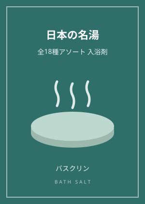

城めぐりと湯めぐりは相性がいい｜名城のそばの名湯を歩く

城めぐりの旅程を組むとき、宿泊先に温泉地を選ぶと、旅の満足度はぐっと上がります。石垣を登り、天守を見上げて歩き回った一日の終わりに湯に浸かる――城と温泉は、実はとても相性のいい組み合わせです。今回は、名城と名湯を組み合わせる旅の考え方を整理します。
愛媛県松山市は、その代表例です。勝山の松山城は連立式の現存天守群を持つ名城で、市内には日本三古湯のひとつ・道後温泉があります。日中に城を巡り、夕方に道後温泉本館の湯に入る流れは、松山旅の定番として語られます。お城検定の「現存12天守」と温泉検定の「日本三古湯」が、一つの旅で重なる好例です。
温泉地の成り立ちをたどると、その土地の歴史が見えてきます。有馬温泉は豊臣秀吉の湯治で知られ、城崎温泉は外湯めぐりの文化が温泉街の景観を作ってきました。湯の歴史は、交通や暮らしの歴史と結びついています。
お城検定と温泉検定をまたぐテーマです。第一に「松山城は現存12天守、道後温泉は日本三古湯」という二つの顔ぶれの確認。第二に「日本三名泉（草津・下呂・有馬）と日本三古湯（有馬・道後・白浜）の区別」。有馬は両方に名を連ねます。第三に「共同浴場の文化」。道後温泉本館や城崎の外湯、有馬の金の湯・銀の湯は、地域の共同浴場が観光の顔になった例として整理できます。
次の旅では、城の解説ページと温泉紹介ページを行き来しながら行程を組んでみてください。検定で学んだ知識が、旅先の景色の見え方を変えてくれるはずです。
同じテーマの記事：
この記事のおすすめ本

パッケージのイメージ（実際の商品とは異なります）
PR 入浴剤
ここちバス 日本の名湯 全18種セット 30g×56包 個包装 アソート 入浴剤【Amazon.co.jp限定】
メーカー：バスクリン
バスクリンの入浴剤「日本の名湯」シリーズの全18種を詰め合わせたアソートです。登別カルルス・乳頭・山代・黒川・別府・道後など、各温泉地の湯の色と香りを表現した「温泉地公認」仕様で、医薬部外品。30gの個包装が56包入っています。画像はパッケージのイメージです。
Amazonで見る価格はAmazonでご確認ください／リンク先：Amazon.co.jp

表紙イメージ（実際の表紙とは異なります）
PR ガイド・スタンプ帳
日本100名城に行こう 公式スタンプ帳つき
著者：公益財団法人 日本城郭協会
日本100名城の公式ガイドブック。1城1ページで見どころを解説し、巻末がそのまま公式スタンプ帳になります。スタンプラリーを始めるならまずこの一冊。
Amazonで見る価格はAmazonでご確認ください／リンク先：Amazon.co.jp
当サイトは、Amazon.co.jpを宣伝しリンクすることによってサイトが紹介料を獲得できる手段を提供することを目的に設定されたアフィリエイトプログラムである、Amazonアソシエイト・プログラムの参加者です。価格・在庫はリンク先でご確認ください。